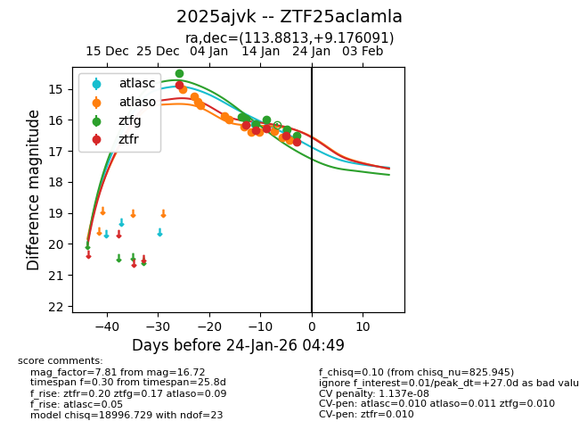
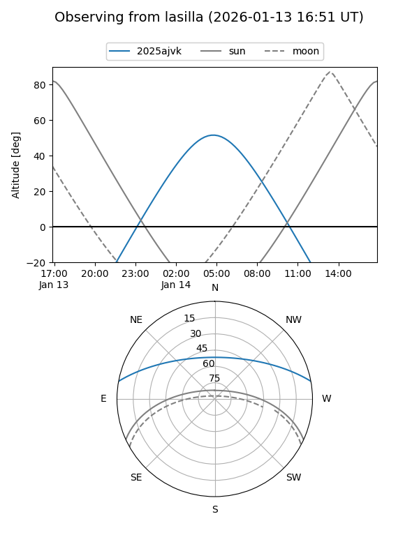
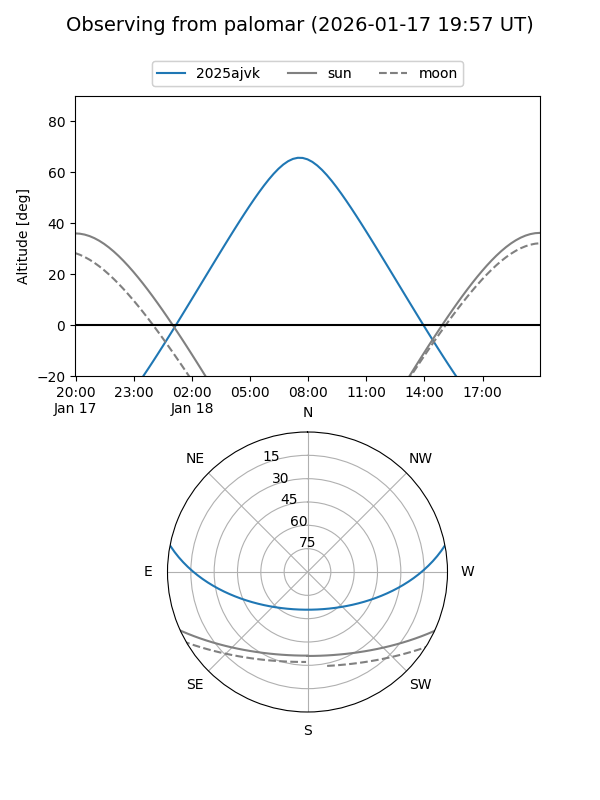
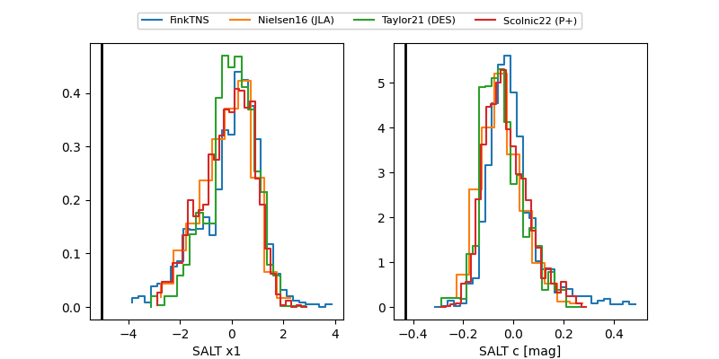

2025ajvk
Target 2025ajvk at 2026-01-18 04:10
Aliases and brokers:
FINK: link
Lasair: link
ALeRCE: link
TNS: link
YSE: link
alt names
ZTF25aclamla (ztf,fink_ztf)
2025ajvk (tns,yse)
Coordinates:
equatorial (ra, dec) = 113.8813,+9.17609
equatorial (HMS+DMS) = 07:35:31.50,+09:10:33.93
galactic (l, b) = (209.6323,+13.92714)
Flags:
likely cv
Photometry:
last atlasc=16.14, atlaso=16.41, ztfg=15.98, ztfr=16.27
1 atlasc, 9 atlaso, 5 ztfg, 4 ztfr detections
Lightcurve

Visibility


Additional plots
